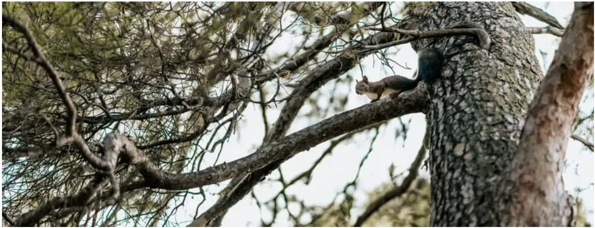

Resources
More Trees Please: The Importance of Planting Trees
Step outside your home and we guarantee you won’t be far from a tree; unless you live in the desert, of course. From pine and oak to willow and ash, we’re surrounded by a huge variety of different types of them.
And while they’re all pretty and wonderful to look at, their importance stems far beyond beauty. The value and purpose of trees are enormous, and their existence is vital for our survival. Below are just some of their benefits.
1. The Environment
Trees help to combat global warming by absorbing carbon dioxide, removing and storing carbon while releasing oxygen back into the air.
They also reduce wind speeds and cool the air as they lose moisture and reflect heat upwards from their leaves. It’s estimated that trees can reduce the temperature in a city by up to 7°C.
Other environmental benefits include the fact they help to prevent flooding and soil erosion, by absorbing thousands of litres of stormwater.
2. Wildlife
From birds and insects to bats and squirrels, trees provide a canopy and a habitat for many species of wildlife. But they don’t just act as a home for wildlife; the fruits from trees provide food for them too.
3. Our Health
Trees help to improve air quality by intercepting and trapping dust and other pollutants from the air. The shade of trees also provides a useful barrier to harmful ultraviolet radiation from the sun.
But it’s not just our physical health that benefits; our mental health does too. When surrounded by trees or taking part in nature-based activities, stress and depression levels can be significantly reduced.
4. Our Communities
Trees can bring people together. They can act as a landmark within a neighborhood and encourage pride among people within that community.
Trees and woodland areas can be used to bring people together for educational purposes. They also allow for activities such as walking or birdwatching. In addition, they give children somewhere to play in and feel a sense of adventure.
5. Planting Trees for Our Future
So, as you can see, humans, animals, and the environment depend upon trees for survival. Therefore, as deforestation continues, we must put back what we’re taking away.
By planting more trees, it will contribute to global reforestation efforts, restoring lost forests, repairing damaged ecosystems, and mitigating climate changes.